温柔陪伴、理性决策——一颗帮你把纠结讲清楚的星球
多智能体 AI 决策辅助，结构化引导而非直接给答案。
降低决策焦虑，把模糊的纠结拆成可衡量的选项。
独立主导，从 0 到 1 定义形态与交互。
2026 · 多轮迭代打磨体验。
不替你做决定，只帮你把选择想得更清楚
覆盖 7 大高频生活场景，用结构化引导代替空洞建议——先理解你纠结的到底是什么，再陪你把每个选项的利弊摊开。
中立化话术，不预设用户身份，也不替用户做最终选择。所有输出保持克制——陪伴，而不是替代。
需求挖掘 → 方案检索 → 反向纠偏 → 代价预演，形成完整决策闭环
不用懂代码，也能看懂它是怎么工作的
三个星球卡片，对应决策旅程里的关键一步
7 大高频生活场景，覆盖你最容易纠结的地方
微信小程序 + 网页版，同一套「温柔陪伴、理性决策」体验
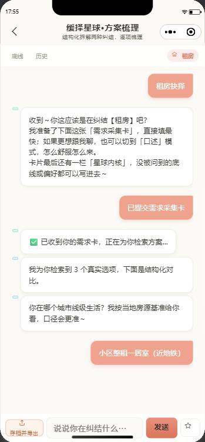
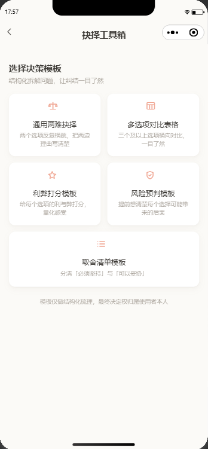
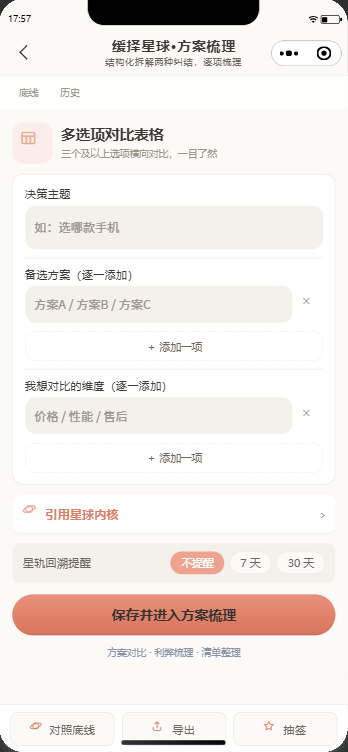
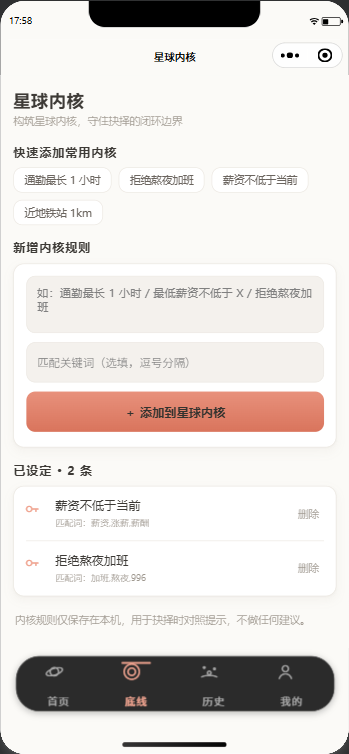
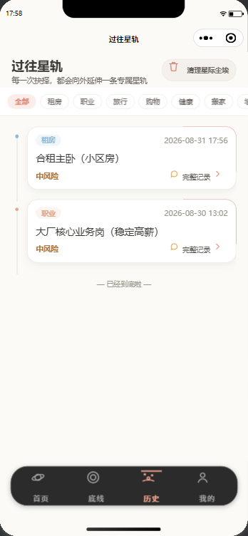
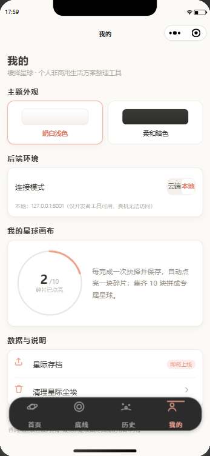
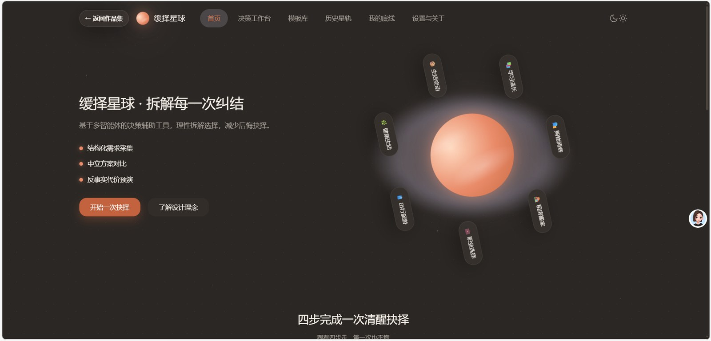
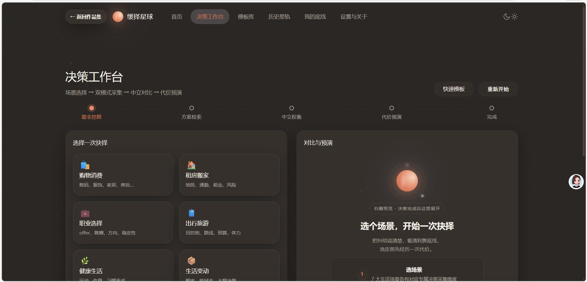
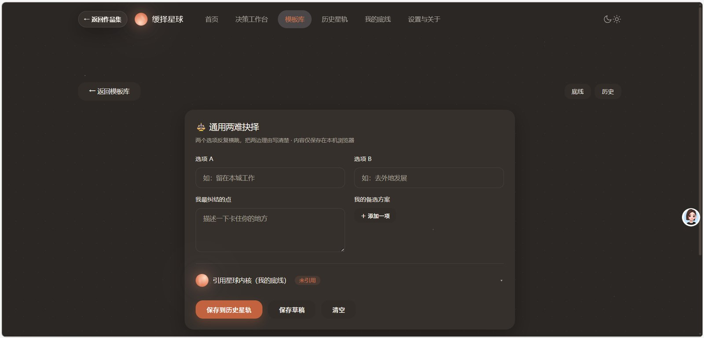
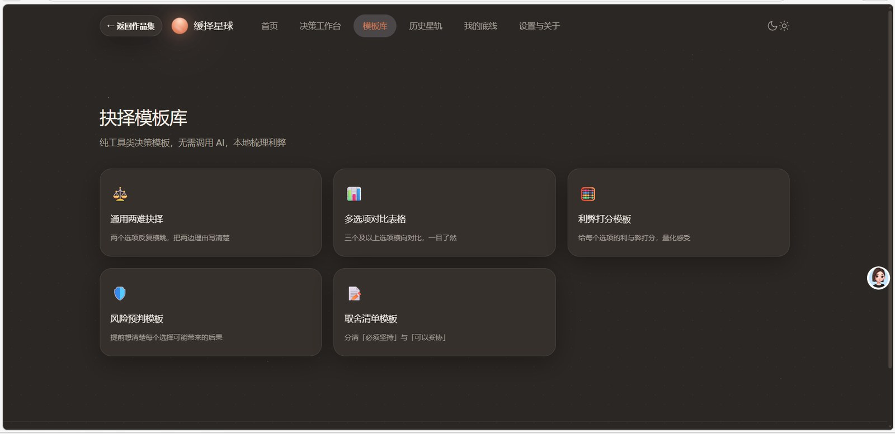
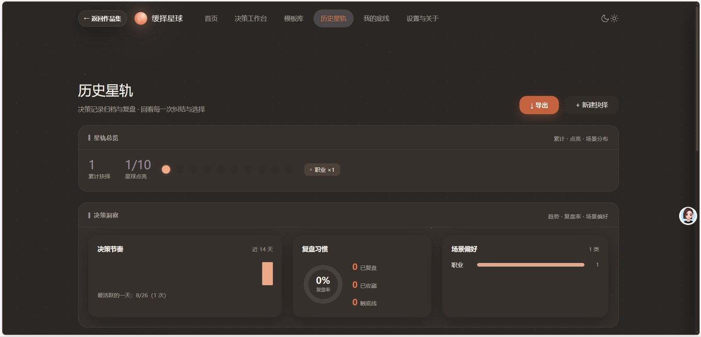
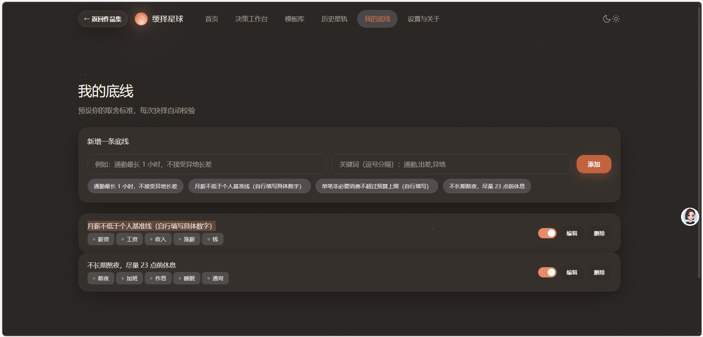
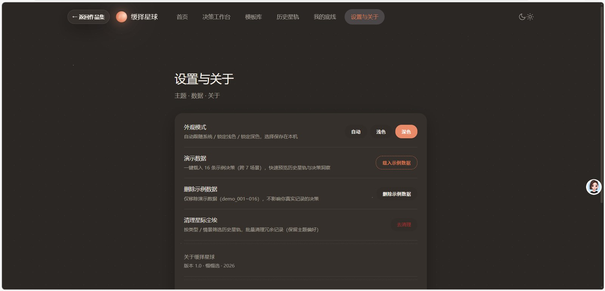
每一次迭代，都让决策收口更轻、更准
多维度测试 + 全流程风控，保障稳定合规
两份可交付物：分层全场景测试集 / 迭代方案与复盘。点击预览。
6 项核心埋点指标，驱动「数据—反馈—迭代」闭环